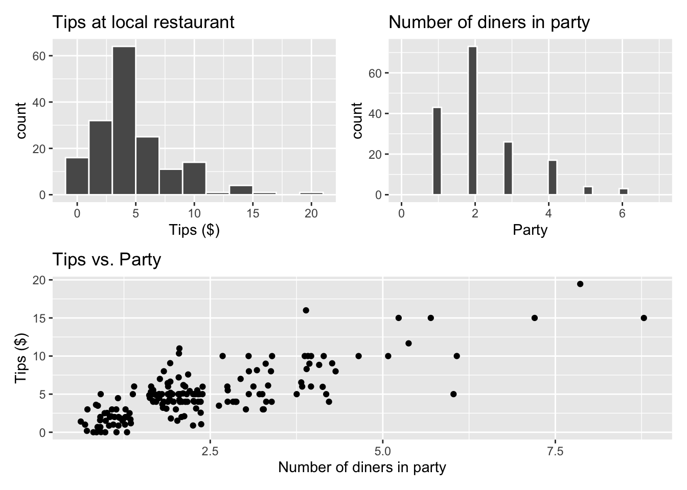

library(tidyverse)
library(tidymodels)
library(knitr)
library(patchwork)AE 08: Exam 01 Review
Important
Go to the course GitHub organization and locate your ae-08 repo to get started.
Render, commit, and push your responses to GitHub by the end of class. The responses are due in your GitHub repo no later than Thursday, October 5 at 11:59pm.
Packages
Restaurant tips
What factors are associated with the amount customers tip at a restaurant? To answer this question, we will use data collected in 2011 by a student at St. Olaf who worked at a local restaurant.1
The variables we’ll focus on for this analysis are
Tip: amount of the tipParty: number of people in the party
View the data set to see the remaining variables.
tips <- read_csv("data/tip-data.csv")Exploratory data analysis
p1 <- ggplot(data = tips, aes(x = Tip)) +
geom_histogram(color = "white", binwidth = 2) +
labs(x = "Tips ($)",
title = "Tips at local restaurant")
p2 <- ggplot(data = tips, aes(x = Party)) +
geom_histogram(color = "white") +
labs(x = "Party",
title = "Number of diners in party") +
xlim(c(0, 7))
p3 <- ggplot(data = tips, aes(x = Party, y = Tip)) +
geom_jitter() +
labs(x = "Number of diners in party",
y = "Tips ($)",
title = "Tips vs. Party")
(p1 + p2) / p3
The goal is to fit a model that uses the number of diners in the party to understand variability in the tips.
Exercise 1
[add answer here]
Exercise 2
The regression output with 90% confidence intervals for the coefficients is shown below.
tips_fit <- linear_reg() |>
fit(Tip ~ Party, data = tips)
tidy(tips_fit, conf.int = TRUE, conf.level = 0.9) |>
kable(digits = 3)| term | estimate | std.error | statistic | p.value | conf.low | conf.high |
|---|---|---|---|---|---|---|
| (Intercept) | 0.383 | 0.321 | 1.195 | 0.234 | -0.147 | 0.913 |
| Party | 1.957 | 0.118 | 16.553 | 0.000 | 1.761 | 2.152 |
glance(tips_fit)$sigma[1] 2.082824[add answer here]
Exercise 3
[add answer here]
Exercise 4
tips_aug <- augment(tips_fit$fit)
rsq(tips_aug, truth = Tip, estimate = .fitted)# A tibble: 1 × 3
.metric .estimator .estimate
<chr> <chr> <dbl>
1 rsq standard 0.621rmse(tips_aug, truth = Tip, estimate = .fitted)# A tibble: 1 × 3
.metric .estimator .estimate
<chr> <chr> <dbl>
1 rmse standard 2.07[add answer here]
Exercise 5
Exercise 6
# add your code hereConduct a hypothesis test using permutation with 100 reps. State the hypotheses in words and mathematical notation. Also include a visualization of the null distribution of the slope with the observed slope marked as a vertical line.
Use \(\alpha = 0.1\) as the decision-making threshold for rejecting or failing to reject the null hypothesis.
set.seed(1234)
# add your code hereExercise 7
# add your code hereExercise 8
[add answer here]
Exercise 9
Note
Check the relevant conditions for Exercise 8. Are there any violations in conditions that make you reconsider your inferential findings? You can reference previous graphs / conditions and add any new code as needed.
# add your code hereExercise 10
# add your code hereTo submit the AE:
Important
- Render the document to produce the PDF with all of your work from today’s class.
- Push all your work to your
ae-08repo on GitHub. (You do not submit AEs on Gradescope).
Footnotes
Dahlquist, Samantha, and Jin Dong. 2011. “The Effects of Credit Cards on Tipping.” Project for Statistics 212-Statistics for the Sciences, St. Olaf College.↩︎